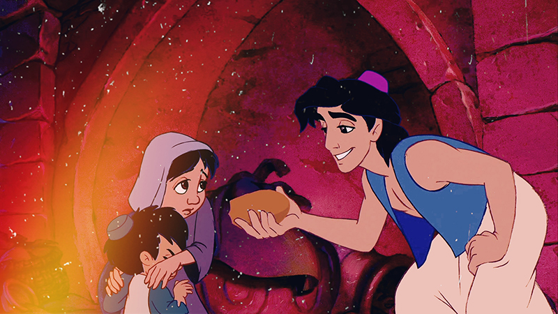
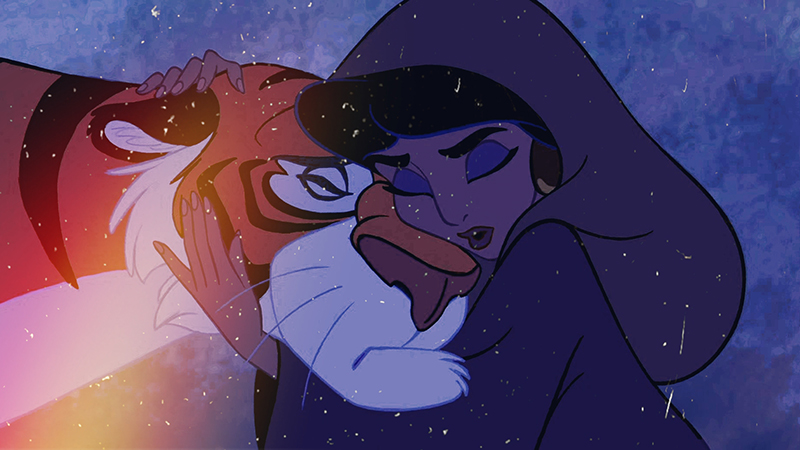
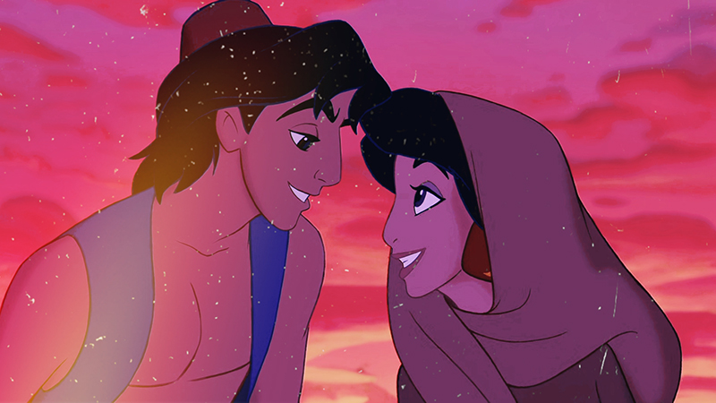
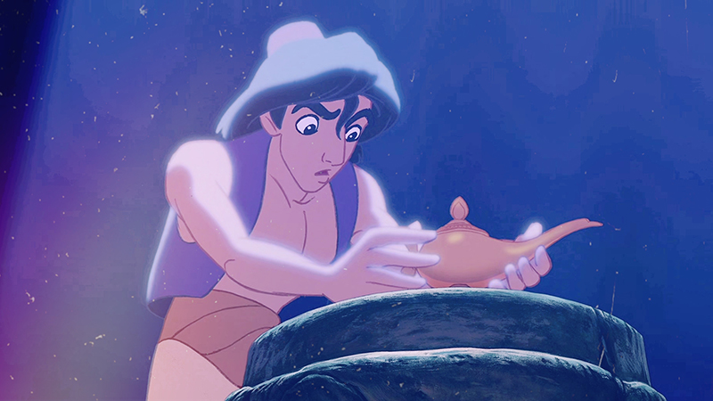

본문콘텐츠영역
 Aladdin is a street-urchin who lives in Agrabah, a large and busy town, long ago with his faithful monkey friend Abu. Aladdin doesn't have a real education, he is poor and has to steal to survive.
 Princess Jasmine have it all. She is well educated, but she feels so caught in the palace. She lives there with her father, the sultan, and her tiger friend, Rajah. When she gets tired of being forced to remain in the palace that overlooks the city, she sneaks out to the marketplace, where she accidentally meets Aladdin. Aladdin helps the princess out of trouble, and they fall in love.
 Under the orders of the evil vesir Jafar, Aladdin is thrown into jail and becomes caught up in Jafar's plot to rule the land with the aid of a mysterious lamp. Legend has it that only a person who is a "diamond in the rough" can retrieve the lamp from the Cave of Wonders. Aladdin seems to be the one. He explores the cave and discovers the lamp. Inside of it, a Genie lives and accepts three wishes from the owner.
 Though Aladdin got the lamp, he still can't marry the princess because of the rule concerning the wishes: The Genie cannot make someone fall in love with another one. Thus, Aladdin uses one of his three wishes at least to pretend to be a prince...